3 Population growth on multiple sites
3.1 Environmental resources
We generate zones of high resources, that will attract settlements and support higher K. The resources will be located at given hotspots with an area around in which they decay with a logistic function.
| logisticdecay | R Documentation |
Logistic decay
Description
Given a raster and a vector of points, set resources hotspots with a logistic decay around them
Usage
logisticdecay(pt, rast, L = 1, k = 1e-04, x0 = 60000)
Arguments
pt |
a vector points around witch decay is computed |
rast |
a raster to compute distances |
L |
starting point of decay |
k |
a vector of decay rates |
x0 |
areas around |
Value
Logistic decay vector
Show code
Code
## Fucntion 13. Logistic decay for resource generation
logisticdecay <- function(pt, rast, L=1, k=0.0001, x0=60000){
ds <- distance(rast, pt)
logdec = L-L/(1+exp(-k*(ds-x0)))
return(logdec)
}
##ressource geolocalisation set manually
goodresources <- vect(
cbind(
x=c(-0.2300711, -3.1455282, -0.5086485, -1.9639755,
-0.4077843, 0.019688, -3.116710),
y=c(3.6423000, -0.2551019, -0.7440748, 1.1303214,
1.0248567, 0.2194895, 2.0267718)
)
)
#spread of resources
areas <- 4 * c(100, 2000, 200, 300, 100, 200, 400)
#speed of ressource decay:
ks <- c(0.0002, 0.0001000, 0.0001600, 0.0001800, 0.00040, .0002, 0.0002)/4
crs(goodresources) <- crs(height.ras)
allres <- lapply(
seq_along(goodresources),
function(i){
logisticdecay(goodresources[i], mask(height.ras, viable),
x=areas[i], k=ks[i]
)
}
)
##
|---------|---------|---------|---------|
=========================================
|---------|---------|---------|---------|
=========================================
|---------|---------|---------|---------|
=========================================
|---------|---------|---------|---------|
=========================================
|---------|---------|---------|---------|
=========================================
|---------|---------|---------|---------|
=========================================
|---------|---------|---------|---------|
=========================================
allna <- sapply(allres, function(i)any(is.na(values(i))))
allres <- allres[!allna]
ress <- allres[[1]]
for(i in 2:length(allres))
ress <- ress + allres[[i]]
ress <- mask(ress,viable)
plot(ress)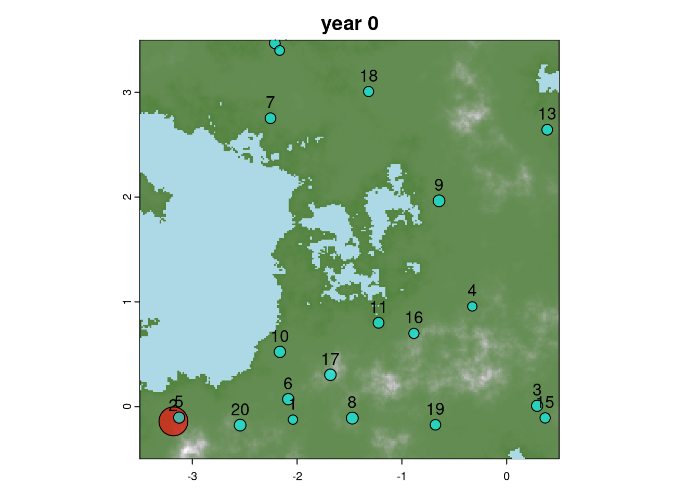
3.2 Initial sites and size:
We initialize the sites of 2 groups, HG and F.
| initKs | R Documentation |
Initialize carrying capacity
Description
It generates a random carrying capacity for each site, but based on the amount of resources.
Usage
initKs(
Kbase = c(HG = 30, F = 120),
sites,
ressources,
sizeexp = NULL,
rate = 0.5
)
Arguments
Kbase |
baseline carrying capacity or different cultures |
sites |
raster with site and culture |
ressources |
a raster type for fall sites |
sizeexp |
Cultures for which to apply a random number generated by an exponential distribution that multiplies the amount of resources |
rate |
Rate of exponential distribution |
Value
A list with a carrying capacity for each culture
| initpopstruc | R Documentation |
Create initial population matrix
Description
This functions initializes a population matrix
Usage
initpopstruc(n = 100, ages = 10:30, p_sex = c(0.5, 0.5))
Arguments
n |
number of individuals |
ages |
initial ages |
p_sex |
proportion individuals of different sex |
Value
a dataframe with age and sex of every individual of the population
| initlistsites | R Documentation |
Initialize list of sites
Description
Initialize list of sites across the years of a simulation
Usage
initlistsites(list_sites, ts = 200)
Arguments
list_sites |
a list of population for all initial sites of the simulation |
ts |
length of simulation |
Value
matrix of list sites
ts <- 250
#a manual way to set cultures given general geography
cultures <- rep("HG",length(sites))
cultures[(crds(sites)[,"x"] < -1 & crds(sites)[,"y"] < 1)]="F"
sites$culture <- cultures
Kbase <- c("HG"=45,"F"=120) #difference in K for the two cultures
# The initial Ks depends on the resources in the area
sites$Ks <- initKs(Kbase, sites, ress, sizeexp="F")
#saveRDS(file="data_original/sitesinitialposition/", sites)
# Optionally we can intialize here our list of sites and population structures
# Otherwise, they are initialized within the run_simulation function
# Population size at initialisation, a number close to Ks
INs <- round(runif(length(sites), 0.85, 0.95)*sites$Ks)
# initialise population structure for all sites
Ips <- lapply(INs, initpopstruc)
# Not we put the population structure across the years in a list
Nts <- initlistsites(Ips, ts=ts)initKs, initpopstruct and initlistsites functions here:
Show code
Code
## Function 14. Initial carrying capacity
initKs <- function(Kbase=c("HG"=30,"F"=120), sites, ressources,
sizeexp=NULL, rate=.5){
Ks <- round(Kbase[sites$culture] + rnorm(length(sites), 0, 10))
while(any(Ks<1)){
Ks <- round( Kbase[sites$culture] + rnorm(length(sites), 0, 10) )
}
#Ks[sites$culture=="F"]=Ks[sites$culture=="F"]*runif(sum(sites$culture=="F"),1,1)
tmp <- Ks * (1 + extract(ressources, sites)[, 2])
if(!is.null(sizeexp)){
tmp[sites$culture==sizeexp] <- (
(Ks[sites$culture==sizeexp]) *
(1 + rexp(sum(sites$culture==sizeexp), rate=rate) * extract(ressources, sites[sites$culture==sizeexp])[,2])
)
}
tmp
}
## Function 15. Create population matrix
initpopstruc <- function(n=100, ages=10:30, p_sex=c(0.5, 0.5)){
initpop = data.frame(
"Age" = sample(ages, n, ages, replace = TRUE),
"Sex" = sample(c("M", "F"), n, prob = p_sex, replace = TRUE))
return(initpop)
}
## Function 16. Initialize initial list of sites
initlistsites <- function(list_sites, ts=200){
Nts <- matrix(0, nrow=ts+1, ncol=length(list_sites))
Nts[1,] <- sapply(list_sites, nrow)
return(Nts)
}Now we have sites with two cultures, initialise the parameters we will use:
#(read sites saved before)
# sites=readRDS(file="data_original/sitesinitialposition/",sites)
#initialisation
ts <- 250
# Kbase=c("HG"=45,"F"=120) #difference in K for the two cultures
# spatial penality to extent: lower, bigger penality
cul_ext <- c("HG"=7, "F"=6)
# penality of occupational area: low, other sites can come close
penal_cul <- c("HG"=4, "F"=5)
# proba to give birth every year
prob_birth <- c("HG"=0.3, "F"=0.5)
# proba to die when pop > K
prob_survive <- c("HG"=0.8, "F"=0.6)
# proba to create new settlement when Ne > K
prob_split <- c("HG"=0.2, "F"=0.6)
# how big the group of migrant should be to create a new city vs
# migrate to a existing one
minimals <- c("HG"=0.14, "F"=0.20)
# prob to migrate to existing settlement when Ne > K
prob_move <- c("HG"=0.2,"F"=0.1)Let’s create again our raster map from the height.ras from the previous chapter
height.wat <- height.ras
height.wat[height.wat>mean(height.wat[])] <- NA
height.groups <- height.ras
maxh <- max(height.ras[],na.rm=T)
height.groups[height.groups<mean(height.groups[])] <- NA
height.groups[height.groups<(maxh*.7)] <- 1
height.groups[height.groups>(maxh*.7)] <- 200
height.groups[is.na(height.groups)] <- -1
height.poly <- as.polygons(height.groups)
viable <- makeValid(height.poly[2,])
plotMap(height.ras,height.wat,paste0("year ", 0))
plot(sites, pch=21, add=T, bg=rainbow(2, alpha=0.6)[as.factor(sites$culture)])
text(sites)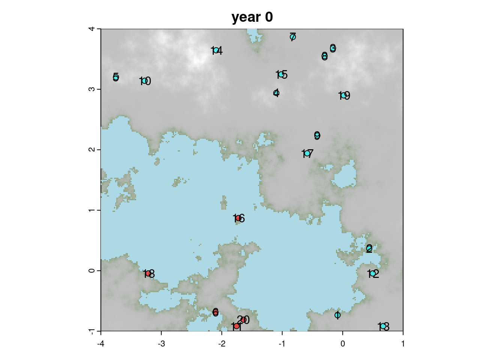
The run_simulation function will take the raster data and parameters for the
different populations and run for the specified number of years.
| run_simulation | R Documentation |
Run simulation
Description
This function runs a stochastic simulation in which different cultures positioned in sites in a raster interact, grow, die, fight, migrate,...
Usage
run_simulation(
cultures = NULL,
viable = viable,
sites = sites,
dem = height.ras,
ressources = ress,
water = height.wat,
foldervid = "pathtofinal",
visu = FALSE,
visumin = TRUE,
ts = 20000,
Kbase = c(HG = 35, F = 120),
cul_ext = c(HG = 7, F = 6),
penal_cul = c(HG = 4, F = 5),
prob_birth = c(HG = 0.3, F = 0.5),
prob_survive = c(HG = 0.8, F = 0.6),
prob_split = c(HG = 0.2, F = 0.6),
prob_move = c(HG = 0.2, F = 0.1),
minimals = c(HG = 0.14, F = 0.2),
bufferatack = 400,
buffersettl = 2000,
Nts = NULL,
Ips = NULL
)
Arguments
cultures |
Vector of cultures to be simulated. Default is |
viable |
Viable SpatVector of the territory |
sites |
SpatVector of sites |
dem |
Digital Elevation Model SpatRaster of the map |
ressources |
SpatVector with resources position |
water |
SpatRaster with water |
foldervid |
If |
visu |
logical; whether to plot simulation snaps |
visumin |
logical; whether to plot a minimal visualization of the simulation |
ts |
Length of the simulation in years |
Kbase |
Named vector with carrying capacities for the cultures |
cul_ext |
Named vector. Spatial penalty to extent: lower, bigger penality |
penal_cul |
Named vector. Penality of occupational area: if low, other sites can come close |
prob_birth |
Named vector. Probability of giving birth every year |
prob_survive |
Named vector. Probability of dying when the pop size is greater than the carrying capacity |
prob_split |
Named vector. Probability of creating a new split settlement when the pop size is greater than the carrying capacity |
prob_move |
Probability of migrating to a existing settlement when Ne > K |
minimals |
Named vector. How big, proportionally, the group of migrants should be to create a new city vs migrate to a existing one. |
bufferatack |
Maximum distance around which a settlement can fight |
buffersettl |
Minimum distance around a site in which a new settlement cannnot settle |
Nts |
Initiallized list of sites. Created with initlistsites.
Default is |
Ips |
Initial population structure. Created with initpopstruc.
Default is |
Value
A list with site data across the simulation period, population structures, war casualties and updated sites positions.
It uses a number of other functions to model contacts between sites, the outcomes of fights and migrations
| whotouch | R Documentation |
Check sites touching
Description
Check who's touching a given site
Usage
whotouch(i, sites, Ne, homophily = F, buffersize = 200)
Arguments
i |
Index of the site checked |
sites |
Raster with site coordinates, cultures and carrying capacities |
Ne |
population size of all sites |
homophily |
if true, return all sites that touch (even same culture) |
buffersize |
Buffer size around a given site to consider contacts. It's a factor that multiplies the population size Ne |
Value
Returns a raster with the sites that are touching site i
| fightbetterloss | R Documentation |
Model fight with better probabilities
Description
A function to compute lost during a fighting. The winner and looser are decided probabilistically from their relative size. It then uses a binomial to model the loss of population sizes, with probability based on their relative sizes.
Usage
fightbetterloss(Ne, a, b)
Arguments
Ne |
list of population sizes for the fighting settlement |
a |
indice of the first settlement |
b |
indice of the second settlement |
Value
Returns the updated population size of both settlements engaged in the fight
| changePopSize | R Documentation |
Change population sizes
Description
It changes population sizes due to killing or swap between a loosing and winning population
Usage
changePopSize(
loosingPop,
size,
winingPop = NULL,
new = F,
method = "random",
probs = dnorm,
prob.option = list(sd = 10, mean = 22)
)
Arguments
loosingPop |
data.frame of the population that's decreasing |
size |
Number of deaths or size of the population swap |
winingPop |
data.frame of the population that's increasing |
new |
Deprecated |
method |
Currently only supports "random" |
probs |
Density distribution function to calculate probabilities of individuals to be sampled based on age |
prob.option |
Options for probs functions (e.g. |
Value
Either the updated loosing population data.frame or a list with both the winning and loosing populations
| warpoints | R Documentation |
Draw a war symbol where two clans are fighting
Description
Draws a war symbol in the sites raster at the point of intersection between fighting clans
Usage
warpoints(sites, a, b, Ne, buffersize = 300, plot = T, sizewar = 2)
Arguments
sites |
Raster with site coordinates, cultures and carrying capacities |
a |
Index of first settlement |
b |
Index of second settlement |
Ne |
Population sizes list |
buffersize |
buffer size around a given site to consider contacts. It's a factor that multiplies the population size Ne |
plot |
Whether to make a plot or not |
sizewar |
Size of the war symbol |
Value
Raster of the intersection point between sites a and b, if any.
Or we can run a simple simulations using the saved elevation data.
height.ras <- rast("data_original/east_narnia4x.tif")
height.wat <- height.ras
height.wat[height.wat>mean(height.wat[])] <- NA
height.groups <- height.ras
maxh <- max(height.ras[],na.rm=T)
height.groups[height.groups<mean(height.groups[])] <- NA
height.groups[height.groups<(maxh*.7)] <- 1
height.groups[height.groups>(maxh*.7)] <- 200
height.groups[is.na(height.groups)] <- -1
height.poly <- as.polygons(height.groups)
viable <- makeValid(height.poly[2,])
sites <- vect("data_original/sitesinitialposition/")
ts <- 10
print(paste0("Starting simulation ","nan"))
## [1] "Starting simulation nan"
onesimu <- run_simulation(
sites=sites, viable=viable, dem=height.ras,
ressources=rast("data_original/resources.tiff"),
water=height.wat,
foldervid="nan",
visu=F, visumin=F,
ts=ts, #length of simulation in year
Kbase=c("HG"=35, "F"=110), #difference in K for the two cultures
cul_ext=c("HG"=7, "F"=6), #spatial penality to extent: lower, bigger penality
penal_cul=c("HG"=4, "F"=5), #penality of occupational area: low, other sites can cam close
prob_birth=c("HG"=0.3, "F"=0.5), #proba of giving birth every year
prob_survive=c("HG"=0.8, "F"=0.65), #proba of dying when pop > K
prob_split=c("HG"=0.5, "F"=0.6), #proba of creating a new settlement when Ne > K
minimals=c("HG"=0.14,"F"=0.20), #how big the group of migrant should be to create a new city vs migrate to a existing one
bufferatack=300, #distance max around which settlement can fight
prob_move=c("HG"=0.2, "F"=0.1) #proba of migrating to existing settlement when Ne > K
)
## [1] "year 2 total 1570 with 30 sites ( F:4,HG:26 )"
##
|---------|---------|---------|---------|
=========================================
[1] "29 migrant from F to F"
## [1] "year 3 total 1764 with 30 sites ( F:4,HG:26 )"
##
|---------|---------|---------|---------|
=========================================
|---------|---------|---------|---------|
=========================================
[1] "new settlement (HG) of K 36 and pop 7"
##
|---------|---------|---------|---------|
=========================================
[1] "8 migrant from HG to HG"
##
|---------|---------|---------|---------|
=========================================
[1] "4 migrant from HG to HG"
##
|---------|---------|---------|---------|
=========================================
|---------|---------|---------|---------|
=========================================
[1] "new settlement (HG) of K 42 and pop 10"
##
|---------|---------|---------|---------|
=========================================
[1] "4 migrant from HG to HG"
##
|---------|---------|---------|---------|
=========================================
[1] "9 migrant from HG to HG"
##
|---------|---------|---------|---------|
=========================================
|---------|---------|---------|---------|
=========================================
[1] "new settlement (HG) of K 57 and pop 6"
##
|---------|---------|---------|---------|
=========================================
|---------|---------|---------|---------|
=========================================
[1] "new settlement (HG) of K 32 and pop 7"
##
|---------|---------|---------|---------|
=========================================
|---------|---------|---------|---------|
=========================================
[1] "new settlement (HG) of K 29 and pop 4"
##
|---------|---------|---------|---------|
=========================================
[1] "4 migrant from HG to HG"
## [1] "year 4 total 1831 with 35 sites ( F:4,HG:31 )"
##
|---------|---------|---------|---------|
=========================================
|---------|---------|---------|---------|
=========================================
[1] "new settlement (HG) of K 45 and pop 5"
##
|---------|---------|---------|---------|
=========================================
[1] "3 migrant from HG to HG"
##
|---------|---------|---------|---------|
=========================================
|---------|---------|---------|---------|
=========================================
[1] "new settlement (HG) of K 50 and pop 9"
##
|---------|---------|---------|---------|
=========================================
[1] "8 migrant from HG to HG"
## [1] "year 5 total 1856 with 37 sites ( F:4,HG:33 )"
##
|---------|---------|---------|---------|
=========================================
[1] "4 migrant from HG to HG"
## [1] "year 6 total 1851 with 37 sites ( F:4,HG:33 )"
##
|---------|---------|---------|---------|
=========================================
|---------|---------|---------|---------|
=========================================
[1] "new settlement (HG) of K 35 and pop 7"
##
|---------|---------|---------|---------|
=========================================
[1] "8 migrant from HG to HG"
## [1] "year 7 total 1876 with 38 sites ( F:4,HG:34 )"
##
|---------|---------|---------|---------|
=========================================
[1] "4 migrant from HG to HG"
##
|---------|---------|---------|---------|
=========================================
[1] "4 migrant from HG to HG"
##
|---------|---------|---------|---------|
=========================================
|---------|---------|---------|---------|
=========================================
[1] "new settlement (HG) of K 35 and pop 5"
##
|---------|---------|---------|---------|
=========================================
|---------|---------|---------|---------|
=========================================
[1] "new settlement (HG) of K 21 and pop 4"
##
|---------|---------|---------|---------|
=========================================
[1] "6 migrant from HG to HG"
##
|---------|---------|---------|---------|
=========================================
[1] "17 migrant from F to F"
##
|---------|---------|---------|---------|
=========================================
|---------|---------|---------|---------|
=========================================
[1] "new settlement (HG) of K 43 and pop 6"
##
|---------|---------|---------|---------|
=========================================
|---------|---------|---------|---------|
=========================================
[1] "new settlement (HG) of K 51 and pop 6"
## [1] "year 8 total 1896 with 42 sites ( F:4,HG:38 )"
##
|---------|---------|---------|---------|
=========================================
[1] "16 migrant from F to F"
##
|---------|---------|---------|---------|
=========================================
|---------|---------|---------|---------|
=========================================
[1] "new settlement (HG) of K 49 and pop 4"
##
|---------|---------|---------|---------|
=========================================
[1] "6 migrant from HG to HG"
## [1] "year 9 total 1915 with 43 sites ( F:4,HG:39 )"
## [1] "year 10 total 1934 with 43 sites ( F:4,HG:39 )"
## [1] "year 11 total 1923 with 43 sites ( F:4,HG:39 )"
##
|---------|---------|---------|---------|
=========================================
[1] "3 migrant from HG to HG"
##
|---------|---------|---------|---------|
=========================================
[1] "4 migrant from HG to HG"
##
|---------|---------|---------|---------|
=========================================
[1] "26 migrant from F to F"Show code
Code
## Function 17. Change population sizes
changePopSize <- function(loosingPop, size, winingPop=NULL, new=F,
method="random", probs=dnorm,
prob.option=list("sd"=10, "mean"=22)) {
#print(dim(loosingPop))
#if(!is.null(winingPop))
# print(dim(winingPop))
#if(length(size)==0 || size==0)return(data.frame(Age=numeric(),Sex=character()))
if(nrow(loosingPop)==0){
kill <- 0
}else if(method=="random"){
kill <- tryCatch(
sample(x=1:nrow(loosingPop), size=size,
prob=probs(loosingPop$Age, mean=prob.option$mean, sd=prob.option$sd)),
error=function(e){
print(paste0("problem with population replacement for settlement of size:",
nrow(loosingPop), " need to loose ", size));0
}
)
}
#print(paste("diff",nrow(popdistrib)-size,"new",size))
if(!is.null(winingPop)){
winingPop <- rbind(winingPop, loosingPop[kill,])
}
loosingPop <- loosingPop[-kill,]
if(!is.null(winingPop))
return(list(loosingPop, winingPop))
else
return(loosingPop)
}
## Function 18. Check sites touching
whotouch <- function(i, sites, Ne, homophily=F, buffersize=200){
touch <- st_intersects(
st_make_valid(st_as_sf(buffer(sites[i], Ne[i] * buffersize))),
st_make_valid(st_as_sf(buffer(sites, Ne * buffersize))))
if( length(touch) > 0 ){
enemies <- unlist(touch)
if(homophily){
enemies <- enemies[enemies != i]
} else {
enemies <- enemies[sites$culture[enemies] != sites$culture[i]]
}
} else {
enemies <- NA
}
return(enemies)
}
## Function 19. Model a simple fight
simplefight <- function(Ne, a, b){
if(runif(1) < Ne[a] / (Ne[a] + Ne[b])){
v <- a
l <- b
}
else{
v <- b
l <- a
}
# Keep the original pop sizes for reporting outcome
one <- Ne
# Update population sizes using a binomial
Ne[v] <- rbinom(n=1, prob=0.9, size=Ne[v])
Ne[l] <- rbinom(n=1, prob=0.4, size=Ne[l])
print(
paste("victory", v, "(", one[v], "-", Ne[v],") over", l,
"(",one[l],"-",Ne[l],"), total of: ", (one[v]-Ne[v]) + (one[l]-Ne[l]), "people"))
return(Ne)
}
## Function 20. Model fight with better probabilities
fightbetterloss <- function(Ne,a,b){
if( runif(1) < Ne[a]/(Ne[a] + Ne[b]) ){
v <- a
l <- b
}
else{
v <- b
l <- a
}
one <- Ne
Ne[v] <- rbinom(n=1, prob=1 - Ne[l]/(Ne[v] + Ne[l]), size=Ne[v])
Ne[l] <- rbinom(n=1, prob=1 - Ne[v]/(Ne[v] + Ne[l]), size=Ne[l])
print(paste0("victory ", v, "(", one[v], "-", Ne[v],") over ", l,
" (", one[l], "-", Ne[l], "), tot: ", (one[v]-Ne[v]) + (one[l]-Ne[l]), "losses"))
return(Ne)
}
## Function 21. Draw a war symbol where two clans are fighting
warpoints <- function(sites, a, b, Ne, buffersize=300, plot=T, sizewar=2){
meetpoints <- crop(
buffer(sites[a], 1+Ne[a] * buffersize),
buffer(sites[b], 1+Ne[b] * buffersize)
)
if( length(meetpoints)>0 ){
p <- spatSample(meetpoints, 1)
if(plot & length(p)>0){
plot(p, add=T, bg="red", pch="🔥", cex=sizewar,
col=adjustcolor("yellow", 0.1))
plot(p, add=T, bg="yellow", pch="⚔️" ,cex=sizewar)
}
return(p)
}
else return(NULL)
}
## Function 22. Run simulation
run_simulation <- function(cultures=NULL,
viable=viable,
sites=sites,
dem=height.ras,
ressources=ress,
water=height.wat,
foldervid="pathtofinal",
visu=FALSE,
visumin=TRUE,
ts=20000,
Kbase=c("HG"=35, "F"=120),
cul_ext=c("HG"=7, "F"=6),
penal_cul=c("HG"=4, "F"=5),
prob_birth=c("HG"=0.3, "F"=0.5),
prob_survive=c("HG"=0.8, "F"=0.6),
prob_split=c("HG"= .2, "F"=0.6),
prob_move=c("HG"=0.2, "F"=0.1),
minimals=c("HG"=.14, "F"=.20),
bufferatack=400,
buffersettl=2000,
Nts=NULL,
Ips=NULL
){
## Run stochastic process
Ks <- sites$Ks
cultures <- sites$culture
if(is.null(Nts)){
INs <- round(runif(length(sites), 0.85, 0.95) * sites$Ks) #Population size at initialisation
Ips <- lapply(INs, initpopstruc) #initialise population structure for all sites
Nts <- initlistsites(Ips, ts=ts)
frame <- 0
mint <- 2
} else {##should check and test howto start back a simulation
mint <- nrow(Nts)
frame <- nrow(Nts)
}
### visualisation =====
if(!dir.exists(foldervid) & visu){
dir.create(foldervid)
}
###
warcasualties <- vector("integer", ts)
for (i in 2:(ts+1)){
countcult <- table(sites$culture[Nts[i-1, ] > 0])
if ( length(countcult) != 2 ) {
return(
list(Nts=Nts[,1:i],
warcasualties=warcasualties[1:i],
Ips=Ips,
sites=sites
)
)
}
print(
paste("year", i, "total", sum(sapply(Ips,nrow)),
"with", length(sites), "sites (",
paste0(paste(names(countcult), countcult, sep=":"), collapse=","), ")"))
if (visumin){
### visualisation =====
frame <- frame+1
filename <- sprintf("map_%06d.png", frame)
png(file.path(foldervid,filename), width=800, height=800, pointsize=20)
plotMap(dem, water, paste0("year ",i))
########
}
inactives <- (Nts[i-1,]==0)
for ( s in sample(seq_along(sites)[!inactives]) ){
if ( visu ) {
### visualisation =====
frame <- frame+1
filename <- sprintf("map_%08d.png", frame)
png(file.path(foldervid,filename), width=800, height=800, pointsize=20)
plotMap(dem,water,paste0("year ", i))
########
}
city <- NULL
Ips[[s]] <- Gpd( #compute new population for the sites
Ips[[s]], K = Ks[[s]],
p_offspring = prob_birth[sites$culture[s]],
prob = prob_survive[sites$culture[s]]
)
newN <- nrow(Ips[[s]]) #count population size
if(newN >= (Ks[[s]])){ #if new population is more than carrying capacity: migration scenario
migrants <- newN - round(Ks[[s]]*0.9)
##Creation of new city
new_site <- NULL
#if(sites$culture[s]=="F")print(paste("possib",migrants, (minimals[sites$culture[s]]*sites$Ks[s])))
tmp <- Nts[i-1,]
tmp[Nts[i,] > 0] <- Nts[i, Nts[i,] > 0]
#tmp=tmp+sqrt(sites$Ks)
havemoved <- F
if (migrants >= (minimals[sites$culture[s]]*sites$Ks[s]) & runif(1)<prob_split[sites$culture[s]] ){
#if supopulation > 10 people, 10% chance of creation of a new city
#print(paste("look for new spot for ",migrants, "from site",s,"culture",sites$culture[s]))
#mean of area of influence
infarea <- (sqrt(tmp)+penal_cul[cultures]) * buffersettl
buffersize <- rnorm(length(infarea), infarea, infarea * 0.1)
buffersize[tmp==0] <- 0
territory <- erase(viable, buffer(sites, buffersize))
if( length(territory)>0 ){
#print(paste("found new spot",migrants))
##select a new site given its distance to the old one and the ressourcesource available in ressources
d2 <- logisticdecay(
sites[s], dem, x=20000*cul_ext[sites$culture[s]]
)
w <- (0.7 * d2 + 0.3*ressources) / (0.7*minmax(d2)[2] + 0.3*minmax(ressources)[2])
new_site <- spatSample(
x=mask(
w * logisticdecay(sites[s], dem, k=0.00002,
x=20000*cul_ext[sites$culture[s]]),
territory),
size=1, method="weights", xy=T)[1:2]
new_site <- vect(new_site, geom=c("x","y"))
if ( length(new_site)>0 & all(!is.na(crds(new_site))) ){
##add new site to site listes
##initialise population struc of new site
#print(paste("total sites:",length(Ips)))
#print(paste("dim Nts:",dim(Nts)[2]))
#print(paste("site sf Nts:",length(sites)))
Ips[[length(Ips)+1]] <- initpopstruc(n=migrants) #initialise a fake populaition, will be updated by real migrants later
new_site$culture <- sites$culture[s]
new_site$Ks <- round(initKs(
Kbase, sites=new_site, ressources,
sizeex="F", rate=0.45))
print(paste0("new settlement (", sites$culture[s], ") of K ",
new_site$Ks, " and pop ", migrants))
sites <- rbind(sites, new_site)
Ks[length(Ks)+1] <- new_site$Ks
city <- length(Ips)
Nts <- cbind(Nts, rep(0,ts+1))
Nts[i, city] <- migrants
cultures <- c(cultures, cultures[s])
#print(paste("new site sf Nts:",length(sites)))
#print(paste("new dim Nts:",dim(Nts)[2]))
#print(paste("new total sites:",length(Ips)))
havemoved <- T
}
}
}
## if no creation of new city happen, there is a certain probability that people will move
if( length(new_site)==0 && runif(1) < prob_move[sites$culture[s]] ){
#getj
att <- extract(ressources,sites)[,2]
space <- sites$Ks - (Nts[i-1,] + migrants)
dis <- extract(logisticdecay(sites[s], dem, k=0.00002, x=1), sites)[,2]
attractivity <- att * space * dis
#attractivity=attractivity*(1+10*(sites$culture[s]==sites$culture)) #4 times more likely to go to similar culture
attractivity[s] <- min(attractivity)-1
attractivity <- exp(attractivity)/sum(exp(attractivity))
attractivity[Nts[i-1,]<10] <- 0
attractivity[sites$culture!=sites$culture[s]] <- 0
if(any(is.na(attractivity))){
print(attractivity)
attractivity[is.na(attractivity)] <- 0
}
city <- sample(size=1, x=seq_along(sites), prob=attractivity)
Nts[i,city] <- Nts[i-1,city] + migrants
print(paste(migrants, "migrant from", sites$culture[s],
"to", sites$culture[city]))
havemoved <- T
}
if( havemoved ){
#print(paste("old spot",migrants," for ",nrow(Ips[[s]])))
#print(paste("old new spot",migrants," for ",nrow(Ips[[city]])))
#if(city>length(Ips))print(paste("problem, migrants:",migrants))
#print(paste("the other:",city))
Ips[c(s,city)] <- changePopSize(
loosingPop=Ips[[s]], winingPop=Ips[[city]], size=migrants
)
newN <- newN - migrants
#print(paste("loosing ",newN," vs ",nrow(Ips[[s]])))
#print(paste("wining ",newN," vs ",nrow(Ips[[city]])))
}
}
Nts[i,s] <- newN
if (visu){
###visualisation=========
sitescols <- rep(1,length(sites))
siteslwd <- rep(1,length(sites))
ii=NULL
if(!is.null(city)){
sitescols[s] <- "yellow"
sitescols[city] <- "red"
siteslwd[s] <- 3
siteslwd[city] <- 3
ii <- st_cast(st_combine(st_as_sf(sites[c(s, city)])), "LINESTRING")
}
if (!is.null(ii)){
plot(ii ,add=T)
}
tmp <- Nts[i-1,]
tmp[Nts[i,]>0] <- Nts[i,Nts[i,]>0]
plot(sites, cex=(as.integer(Nts[i,]>0) * 0.3 + Nts[i,]/200),
pch=21, add=T, bg=rainbow(2, alpha=0.6)[as.factor(sites$culture)],
lwd=siteslwd, col=sitescols)
dev.off()
###=======================
}
}
if(visumin){
plot(sites, cex=(as.integer(Nts[i,]>0) * 0.3 + Nts[i,]/200),
pch=21, add=T, bg=rainbow(2, alpha=0.6)[as.factor(sites$culture)])
}
potentialfighters <- which(sites$culture=="F" & Nts[i,]>50)
for (s in sample(x=potentialfighters, size=round(length(potentialfighters)*0.1))){
buff <- bufferatack
potentialvictims <- which(sites$culture !=sites$culture[s] & Nts[i,]>0)
clash <- whotouch(s, sites, Ne=Nts[i,], buffersize=buff)
if(length(clash)>0 && !is.na(clash)){
if(length(clash) == 1){
attack <- clash
} else {
attack <- sample(clash, 1)
}
newns <- fightbetterloss(Ne=Nts[i,], a=s, b=attack)
casualties <- sum(Nts[i, c(s,attack)] - newns[c(s,attack)])
warcasualties[i] <- casualties
sizew <- casualties^2/4000
warpoints(sites, s, attack, Ne=Nts[i,],
buffersize=buff, sizewar=sizew+0.5)
#effectively kill people in population (should be done taking into account age pyramid to be more realistic)
Ips[[s]] <- changePopSize(loosingPop=Ips[[s]],
size=(Nts[i,s] - newns[s]))
Ips[[attack]] <- changePopSize(loosingPop=Ips[[attack]],
size=(Nts[i, attack] - newns[attack]))
Nts[i,] <- newns
print(paste0("fight : #", s, " (",
cultures[s], ") left with ", Nts[i,s],
" (bef:", Nts[i-1,s], ") ind., attacked: #", attack, " (",
cultures[attack], ") left with ", Nts[i,attack],
" (bef:", Nts[i-1,attack],") ind., #death=",casualties))
}
}
if(visumin){
dev.off()
}
}
return(list(Nts=Nts, warcasualties=warcasualties, Ips=Ips, sites=sites))
}The list onesimu contains a few interesting info:
Nts <- onesimu$Nts # population at each timestep
warcasualties <- onesimu$warcasualties #death by war at each time stepUse ressource to adjust the Ks:
plot(sites, cex=(1+Nts[1,]/100), pch=21, bg=rainbow(2, alpha=0.6)[as.factor(sites$culture)])
We look at the simulation step by stepk Step by step to allow interaction between sites:
## Run stochastic process
#par(mfrow=c(2,1))
i <- ncol(Nts)
plot(1, 1, type="n", xlim=c(0,i), ylim=c(0,max(Nts)), xlab="time", ylab="popsize")
lapply(1:ncol(Nts),
function(j)lines(Nts[,j],col=rainbow(2)[as.factor(sites$culture)[j]])
)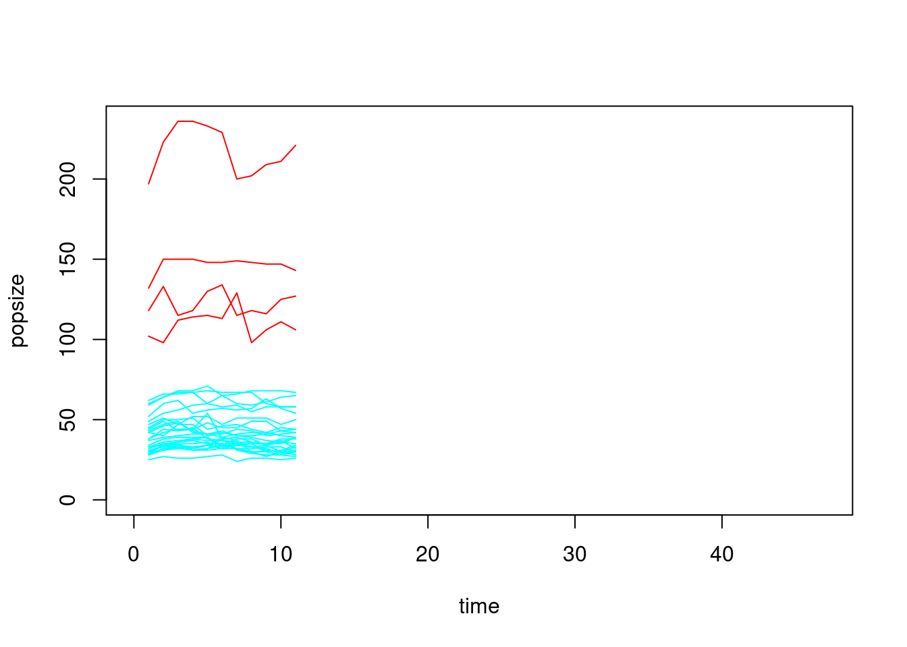
## [[1]]
## NULL
##
## [[2]]
## NULL
##
## [[3]]
## NULL
##
## [[4]]
## NULL
##
## [[5]]
## NULL
##
## [[6]]
## NULL
##
## [[7]]
## NULL
##
## [[8]]
## NULL
##
## [[9]]
## NULL
##
## [[10]]
## NULL
##
## [[11]]
## NULL
##
## [[12]]
## NULL
##
## [[13]]
## NULL
##
## [[14]]
## NULL
##
## [[15]]
## NULL
##
## [[16]]
## NULL
##
## [[17]]
## NULL
##
## [[18]]
## NULL
##
## [[19]]
## NULL
##
## [[20]]
## NULL
##
## [[21]]
## NULL
##
## [[22]]
## NULL
##
## [[23]]
## NULL
##
## [[24]]
## NULL
##
## [[25]]
## NULL
##
## [[26]]
## NULL
##
## [[27]]
## NULL
##
## [[28]]
## NULL
##
## [[29]]
## NULL
##
## [[30]]
## NULL
##
## [[31]]
## NULL
##
## [[32]]
## NULL
##
## [[33]]
## NULL
##
## [[34]]
## NULL
##
## [[35]]
## NULL
##
## [[36]]
## NULL
##
## [[37]]
## NULL
##
## [[38]]
## NULL
##
## [[39]]
## NULL
##
## [[40]]
## NULL
##
## [[41]]
## NULL
##
## [[42]]
## NULL
##
## [[43]]
## NULLVisualise, Record deposit and loss. for the 5 first sites (see next chapters for A_rates).
alldeposit <- lapply(
1:5,
function(i){
Rec_c(sapply(Nts[,i], A_rates), InitBP = 15000, ts=ts, r=0.2, max_bone_thickness="m")
}
)
maxy <- max(sapply(alldeposit, function(i)max(apply(i,2,sum))))
nill <- lapply(alldeposit, function(depo)barplot(t(depo), col=viridis(ts+1), ylim=c(0,maxy))) 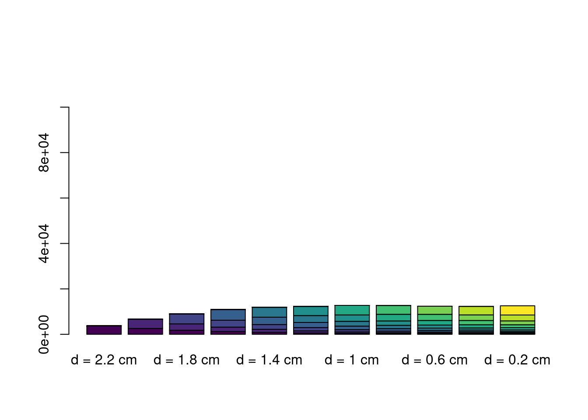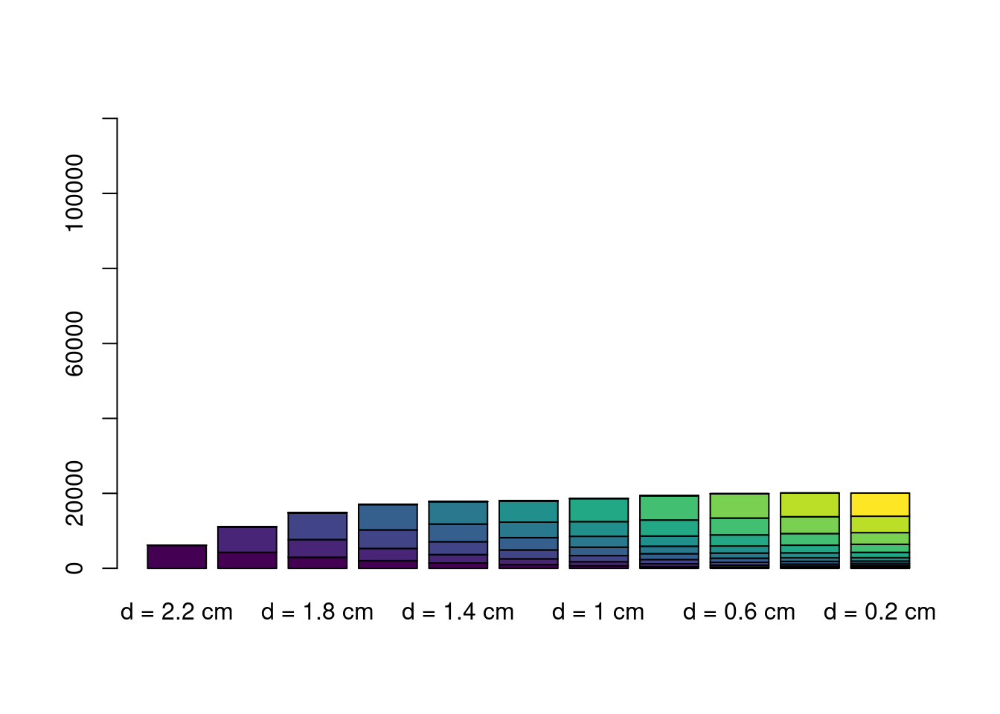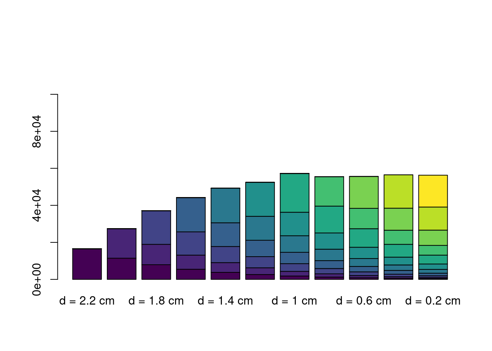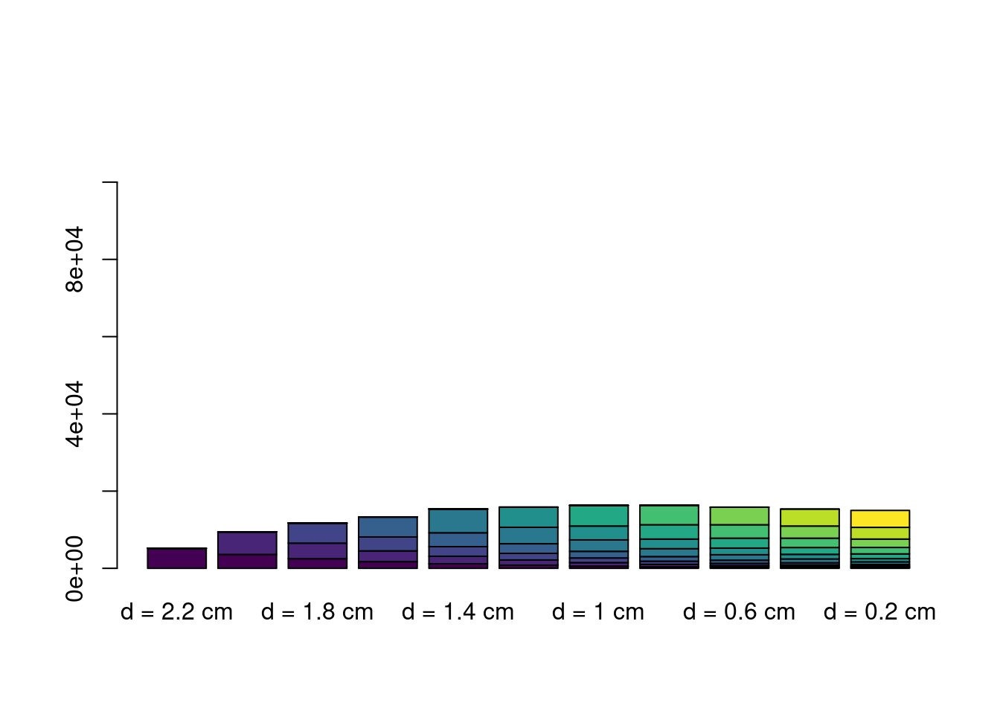
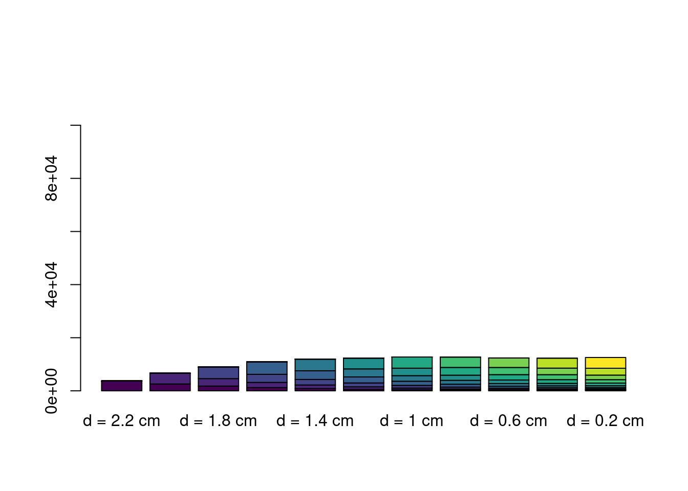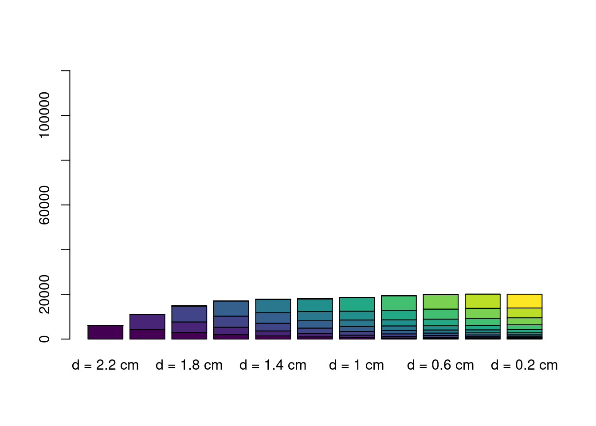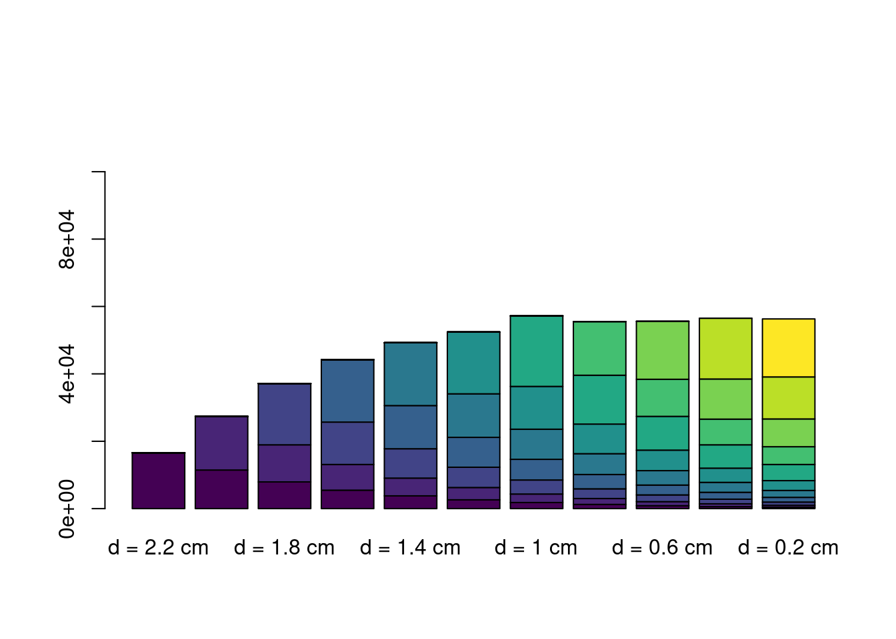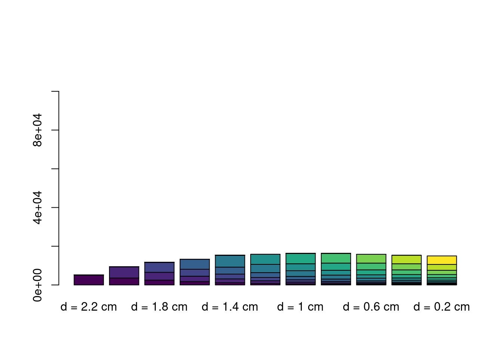
Population by time and culture
par(mfrow=c(2,1))
plot(1, 1, type="n", xlim=c(0,i), ylim=c(0,max(Nts)),
xlab="time", ylab="popsize")
lapply(1:ncol(Nts),
function(i)lines(Nts[,i], col=rainbow(2)[as.factor(sites$culture)[i]]))
## [[1]]
## NULL
##
## [[2]]
## NULL
##
## [[3]]
## NULL
##
## [[4]]
## NULL
##
## [[5]]
## NULL
##
## [[6]]
## NULL
##
## [[7]]
## NULL
##
## [[8]]
## NULL
##
## [[9]]
## NULL
##
## [[10]]
## NULL
##
## [[11]]
## NULL
##
## [[12]]
## NULL
##
## [[13]]
## NULL
##
## [[14]]
## NULL
##
## [[15]]
## NULL
##
## [[16]]
## NULL
##
## [[17]]
## NULL
##
## [[18]]
## NULL
##
## [[19]]
## NULL
##
## [[20]]
## NULL
##
## [[21]]
## NULL
##
## [[22]]
## NULL
##
## [[23]]
## NULL
##
## [[24]]
## NULL
##
## [[25]]
## NULL
##
## [[26]]
## NULL
##
## [[27]]
## NULL
##
## [[28]]
## NULL
##
## [[29]]
## NULL
##
## [[30]]
## NULL
##
## [[31]]
## NULL
##
## [[32]]
## NULL
##
## [[33]]
## NULL
##
## [[34]]
## NULL
##
## [[35]]
## NULL
##
## [[36]]
## NULL
##
## [[37]]
## NULL
##
## [[38]]
## NULL
##
## [[39]]
## NULL
##
## [[40]]
## NULL
##
## [[41]]
## NULL
##
## [[42]]
## NULL
##
## [[43]]
## NULL
plot(apply(Nts, 1, sum)[1:i], xlab="time", ylab="popsize")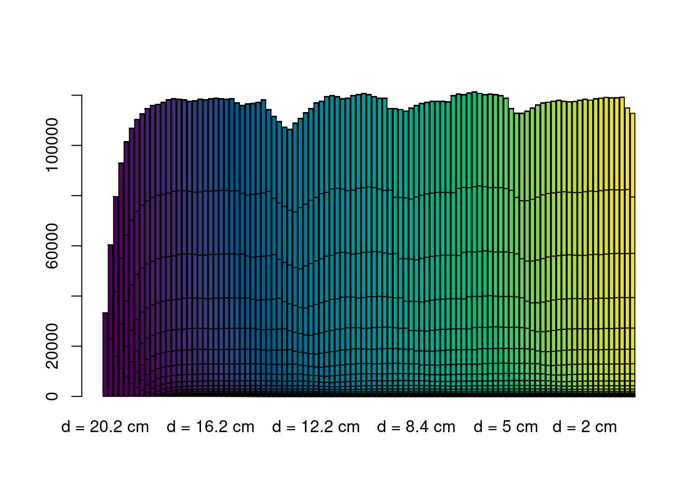
Below some useful code to manually select the resource origins on the map (by clicking on the screen) and explore different decays around them
plotMap(height.ras, height.wat, paste0("year ", 0))
new_site <- vect(as.data.frame(locator()), geom=c("x", "y")) # select point on the sscreep
crs(new_site) <- crs(height.ras)
d2 <- logisticdecay(new_site, height.ras, x=20000) # generate a logistic decay around the point
plot(d2)
w <- (0.7*d2 + 0.3*ress) / (0.7*minmax(d2)[2] + 0.3*minmax(ress)[2])
plot(w)
plot(mask(w*logisticdecay(new_site, height.ras, k=0.00002, x=1), territory))
multisamp <- sapply(
1:1000,
function(i){
spatSample(x=w, size=1, method="weights", xy=T)[1:2]
}
)Exploring some trajectories of the simulations
i <- nrow(Nts)
plot(apply(Nts[1:i, sites$culture=="F"], 1, sum), col="red", type="l",
lwd=2, ylim=c(0, max(apply(Nts, 1, sum))))
points(apply(Nts[1:i, sites$culture=="HG"], 1, sum),
col="blue", lwd=2, type="l")
plot(warcasualties[1:(i-1)], lwd=2, col="green", type="h", yaxt="n", ylab="")
axis(4)
par(new=T)
growF <- apply(Nts[1:(i-1), sites$culture=="F"], 1, sum)
growHG <- apply(Nts[1:(i-1), sites$culture=="HG"], 1, sum)
plot(growF, col="red", type="l", lwd=2, ylim=c(0, max(growF, growHG)))
points(growHG, col="blue", lwd=2, type="l")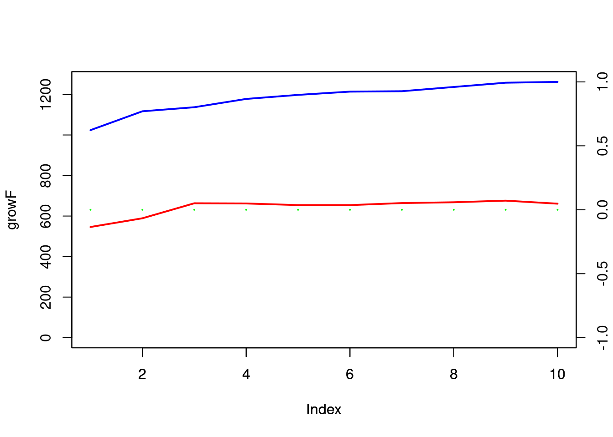